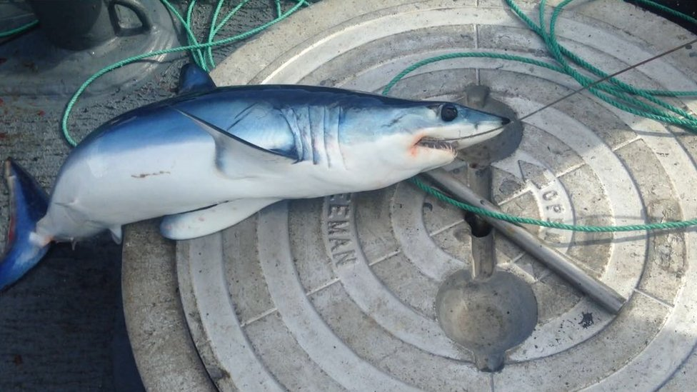

Para pescar existen ciertas normas, entre esas se encuentra los periodos de veda sin embargo muchos pescadores no respetan estas normas provocando algunos problemas entre ellos: la ruptura de las cadenas tróficas.
El tiburon blanco también conocido como el rey de los mares, mantiene a algunos depredaddores marinos con poblaciones equilibradas como las rayas y mantarrayas, para asi prevenir la sobrepoblación de estas especies, pero debido a la pesca directa de especies de tiburones para comercializar sus aletas, además de la pesca de atunes con redes,las cuales suelen pescar tiburones de manera accidental. La pesca de tiburones es una actividad que ha generado considerable controversia y debate en todo el mundo debido a sus impactos ambientales y éticos. Aunque la pesca de tiburones ha sido practicada durante siglos con diferentes propósitos, como el aprovechamiento de sus aletas para la sopa de aleta de tiburón, hoy en día se enfrenta a una creciente preocupación por la sobreexplotación de estas criaturas marinas. La pesca de tiburones a menudo se lleva a cabo con redes de enmalle, palangres o trampas, métodos que no solo capturan el objetivo deseado, sino también otras especies marinas de manera incidental, conocido como pesca incidental. Este fenómeno contribuye a la disminución de poblaciones de otras especies y afecta el equilibrio ecológico en los ecosistemas marinos. Uno de los mayores desafíos asociados con la pesca de tiburones es la práctica de "finning" o mutilación de aletas, en la que los pescadores cortan las aletas de los tiburones y arrojan los cuerpos al mar. Este método, a menudo realizado para aprovechar al máximo el valor de las aletas en el mercado, es altamente cuestionado desde el punto de vista ético y sostenible, ya que puede resultar en la muerte del tiburón sin aprovechar su carne y otros órganos. Además de las preocupaciones éticas, la sobreexplotación de tiburones tiene un impacto directo en los ecosistemas marinos. Los tiburones juegan un papel crucial en el mantenimiento del equilibrio de las poblaciones de peces al regular las poblaciones de sus presas. La disminución de los tiburones puede desencadenar desequilibrios en las cadenas alimenticias marinas, afectando a las poblaciones de peces y otros organismos marinos. Para abordar estos problemas, muchos países y organizaciones están trabajando en la implementación de regulaciones más estrictas y medidas de conservación para proteger a los tiburones. Esto incluye la prohibición del "finning" y la implementación de cuotas de captura sostenibles para garantizar que la pesca de tiburones se realice de manera responsable y sin comprometer la salud de los ecosistemas marinos. En conclusión, la pesca de tiburones es un tema complejo que involucra consideraciones éticas, ambientales y económicas. La búsqueda de soluciones sostenibles y la conciencia sobre la importancia de mantener la salud de los océanos son fundamentales para garantizar la supervivencia de estas criaturas maravillosas y el equilibrio de los ecosistemas marinos.
Mas informacion sobre "el Tiburon blanco"
Al reducir la población de tiburones en un 70% en los ultimos 50 años,las poblaciones de otros depredadores han estado aumentando, los cangrejos arañas que mudan su coraza simultaneamente cerca de una bahìa en Melbourne, Miami pasan de cientos de miles, a tan solo unos cientos de ejemplares, dado al estado de debilidad que se encuentran por la muda de su coraza, y dado que no hay tiburones en la zona en la actualidad, estos cangrejos se vuelven un festin para las mantarrayas.
Otras especies altamente afectadas son:
Siendo muy codiciado por el mundo culinario el atun rojo, se ha visto afectado por el exceso de pesca de este especimen,la poblacion ha decresido un 60% en los ultimos 50 años.Debido a su caida en poblacion y su importancia en nuestro ambiente culinario, en 2006 se decidio realizar seguimineto con respecto a la pesca de atun rojo en tiempo de veda. La pesca indiscriminada de atunes rojos ha sido motivo de creciente preocupación en las últimas décadas debido a la sobreexplotación de esta especie altamente valorada. Thunnus thynnus, comúnmente conocido como atún rojo del Atlántico, es objeto de una intensa actividad pesquera, especialmente debido a su demanda en el mercado internacional, especialmente en la industria del sushi y sashimi. La sobreexplotación del atún rojo se ha convertido en una amenaza significativa para la supervivencia de la especie y para la salud de los ecosistemas marinos en los que habita. La pesca indiscriminada, impulsada por la alta demanda y los precios elevados en el mercado, ha llevado a la disminución de las poblaciones de atunes rojos en todo el mundo. La captura excesiva de atunes rojos a menudo implica la utilización de métodos de pesca intensivos, como la pesca con cerco y el uso de dispositivos de concentración de peces (DCP), que atraen a los atunes para facilitar su captura. Estas prácticas no selectivas no solo afectan a los atunes rojos, sino que también capturan otras especies marinas de forma incidental, incluidas especies en peligro de extinción como las tortugas marinas y los tiburones. Además, el atún rojo es una especie que migra a través de vastas distancias en sus rutas de reproducción y alimentación, lo que implica que las decisiones de gestión de pesca en una región pueden afectar a las poblaciones en otras áreas. La falta de cooperación internacional en la regulación de la pesca de atún rojo ha complicado la implementación de medidas efectivas de conservación. Diversas organizaciones y acuerdos internacionales, como la Comisión Internacional para la Conservación del Atún Atlántico (ICCAT), han trabajado en la implementación de medidas para gestionar la pesca de atunes rojos y garantizar la sostenibilidad de estas poblaciones. Esto incluye establecer límites de captura, períodos de veda, y sistemas de marcado y seguimiento para combatir la pesca ilegal, no declarada y no reglamentada. La conciencia sobre la situación crítica del atún rojo ha llevado a un mayor interés en prácticas pesqueras sostenibles y en la promoción de certificaciones, como la del Marine Stewardship Council (MSC), que garantizan que los productos pesqueros provengan de pesquerías gestionadas de manera responsable. En resumen, la pesca indiscriminada de atunes rojos representa una amenaza seria para la supervivencia de esta especie y la salud de los ecosistemas marinos. La cooperación internacional y la adopción de prácticas pesqueras sostenibles son fundamentales para asegurar la conservación a largo plazo de los atunes rojos y la preservación del equilibrio marino.
El bacalao, conocido por su delicioso sabor y versatilidad culinaria, ha sido objeto de una preocupante sobrepesca en todo el mundo. Esta problemática ha llevado a la disminución de poblaciones de bacalao, lo que afecta tanto a los ecosistemas marinos como a las comunidades que dependen de su pesca. La regulación y prácticas sostenibles son esenciales para preservar este recurso marino tan apreciado y evitar su agotamiento . En la actualidad, se promueven medidas de conservación para asegurar un futuro más sostenible para el bacalao y los océanos. La pesca indiscriminada de bacalao ha sido objeto de preocupación durante mucho tiempo debido a los efectos negativos en las poblaciones de esta especie y en los ecosistemas marinos. El bacalao es una especie ampliamente explotada en todo el mundo, y su pesca intensiva ha llevado a disminuciones significativas en las poblaciones en diversas regiones. El bacalao del Atlántico, Gadus morhua, es una de las especies de bacalao más emblemáticas y comercialmente importantes. A lo largo de los años, la pesca indiscriminada ha implicado el uso de tecnologías avanzadas, como arrastres de fondo y redes de enmalle, que pueden tener impactos devastadores en los hábitats marinos y en otras especies marinas que comparten el mismo entorno. Una de las principales preocupaciones en la pesca indiscriminada de bacalao es la captura incidental de otras especies y la degradación de los fondos marinos. Las redes de arrastre, en particular, pueden dañar hábitats sensibles, como arrecifes de coral y lechos de algas, contribuyendo a la pérdida de biodiversidad y afectando la capacidad de recuperación de los ecosistemas marinos. Además, la pesca sin restricciones ha llevado a la disminución de las poblaciones de bacalao, lo que afecta negativamente a las comunidades que dependen de esta especie para su sustento y a la industria pesquera en general. La falta de medidas efectivas de gestión ha contribuido a la sobreexplotación y a la necesidad de abordar la pesca ilegal, no declarada y no reglamentada. A nivel internacional, varias organizaciones y acuerdos han trabajado en la gestión y conservación del bacalao. La implementación de cuotas de captura, restricciones en el tamaño de las redes y la promoción de prácticas pesqueras sostenibles son medidas clave para abordar los problemas asociados con la pesca indiscriminada de bacalao. La conciencia pública sobre la importancia de conservar las poblaciones de bacalao y los ecosistemas marinos ha llevado a un aumento en la demanda de prácticas pesqueras sostenibles. Certificaciones como las proporcionadas por el Marine Stewardship Council (MSC) han contribuido a identificar y promover productos de bacalao provenientes de pesquerías gestionadas de manera responsable. En conclusión, la pesca indiscriminada de bacalao representa un desafío significativo para la sostenibilidad de esta especie y la salud de los ecosistemas marinos. La cooperación internacional, la implementación de medidas de gestión efectivas y la promoción de prácticas pesqueras sostenibles son esenciales para garantizar la conservación a largo plazo del bacalao y la preservación del equilibrio en los océanos.
La anguila, un pez de agua dulce con un ciclo de vida asombroso, enfrenta graves problemas de sobrepesca en muchas partes del mundo. Su capacidad para adaptarse a diferentes hábitats y su sabor único la han convertido en una presa codiciada. Sin embargo, esta demanda ha llevado a una disminución significativa en las poblaciones de anguilas. La sobrepesca y la degradación de su hábitat amenazan la supervivencia de estas criaturas fascinantes. Es fundamental que se implementen medidas de conservación y gestión adecuadas para proteger a la anguila y mantener un equilibrio en los ecosistemas acuáticos donde habita. La conciencia y la acción colectiva son esenciales para garantizar un futuro sostenible para este peculiar pez. La pesca de anguilas ha sido una actividad importante en diversas culturas a lo largo de la historia, pero en las últimas décadas, ha surgido la preocupación sobre la sostenibilidad de esta práctica. Las anguilas, como la anguila europea (Anguilla anguilla) y otras especies, enfrentan desafíos significativos debido a la pérdida de hábitat, la contaminación del agua y la sobrepesca. Uno de los problemas clave es la pesca excesiva de anguilas, que ha llevado a la disminución de las poblaciones en muchas regiones del mundo. La migración de anguilas desde sus áreas de cría hasta el océano para reproducirse y luego regresar a sus áreas de cría es un proceso vital para su ciclo de vida. Sin embargo, las barreras físicas, como represas y obstáculos artificiales, pueden interrumpir este proceso migratorio, afectando negativamente las poblaciones de anguilas. Además, la contaminación del agua y la degradación del hábitat acuático también representan amenazas para las anguilas. Estos peces son sensibles a cambios en la calidad del agua y a la pérdida de hábitats costeros y de agua dulce, donde pasan gran parte de su vida. Para abordar estos problemas, diversas medidas de conservación se han implementado en diferentes partes del mundo. La gestión sostenible de la pesca de anguilas incluye la regulación de las capturas, la protección de los hábitats críticos y la implementación de tecnologías amigables con el medio ambiente. También se han realizado esfuerzos para abordar las barreras migratorias y mejorar la conectividad de los ríos para permitir que las anguilas completen sus ciclos de vida. A nivel internacional, acuerdos y convenciones, como la Convención sobre el Comercio Internacional de Especies Amenazadas de Fauna y Flora Silvestres (CITES), han desempeñado un papel en la regulación del comercio de anguilas para garantizar su conservación. La conciencia pública sobre los desafíos que enfrentan las anguilas y la importancia de preservar estas especies ha llevado a un mayor interés en prácticas pesqueras sostenibles y a la promoción de la conservación de estos fascinantes peces. En resumen, la pesca de anguilas enfrenta desafíos significativos relacionados con la sobrepesca, la pérdida de hábitat y la contaminación del agua. La implementación de medidas de gestión sostenible y la sensibilización pública son esenciales para garantizar la conservación a largo plazo de las poblaciones de anguilas y la preservación de sus hábitats acuáticos.
El rape, un pez de aguas profundas con una carne de textura suave y sabor distintivo, también se encuentra en peligro debido a la sobrepesca. La alta demanda de este pescado en la industria culinaria ha llevado a la disminución de sus poblaciones en muchos océanos. La pesca insostenible pone en riesgo la biodiversidad marina y afecta a las comunidades que dependen de él. Es crucial implementar prácticas de pesca responsables y regulaciones adecuadas para preservar el rape y sus ecosistemas. La conciencia sobre los peligros de la sobrepesca y la promoción de alternativas sostenibles son pasos fundamentales hacia la conservación de esta especie marina. La pesca del rape, un pez de aguas profundas conocido científicamente como Lophius spp., ha sido una actividad relevante en la industria pesquera. Sin embargo, la explotación descontrolada y la pesca no sostenible han generado preocupaciones sobre la conservación de las poblaciones de rape y la salud de los ecosistemas marinos. El rape es apreciado en la gastronomía por su carne firme y sabrosa, lo que ha llevado a una demanda considerable en los mercados internacionales. La pesca de este pez se realiza con diversos métodos, como redes de arrastre, palangres y nasas. Sin embargo, algunos de estos métodos, especialmente las redes de arrastre de fondo, pueden tener impactos negativos en los fondos marinos y en otras especies marinas que comparten el mismo hábitat. La pesca no regulada y la falta de medidas efectivas de gestión han llevado a la sobreexplotación de ciertas poblaciones de rape en diferentes regiones. La captura incidental de otras especies marinas durante la pesca del rape también representa un problema, ya que puede afectar a ecosistemas enteros y la biodiversidad marina. Para abordar estos problemas, diversas organizaciones y gobiernos han implementado medidas de gestión para regular la pesca del rape. Esto incluye la de cuotas de captura, la definición de tallas mínimas de captura y la restricción de ciertas áreas de pesca para proteger los hábitats críticos. Además, se han promovido prácticas pesqueras más sostenibles y se ha fomentado la adopción de tecnologías selectivas que reduzcan la captura incidental otras especies. La conciencia sobre la necesidad de preservar las poblaciones de rape y mantener la salud de los ecosistemas marinos ha llevado a un aumento en la demanda de pescado sostenible por parte de los consumidores. Certificaciones como las proporcionadas por el Marine Stewardship Council (MSC) también desempeñan un papel importante al identificar y respaldar prácticas pesqueras sostenibles, ayudando a los consumidores a tomar decisiones informadas sobre los productos que eligen. En resumen, la pesca del rape ha experimentado desafíos relacionados con la sobreexplotación y la captura incidental. La implementación de medidas de gestión sostenible y la promoción de prácticas pesqueras responsables son fundamentales para garantizar la conservación a largo plazo de las poblaciones de rape y la preservación de los ecosistemas marinos.
Sin embargo, la pesca de merluza ha enfrentado desafíos relacionados con la sostenibilidad y la gestión adecuada de sus poblaciones. La sobreexplotación de las poblaciones de merluza ha sido un problema en algunas áreas, con capturas que exceden la capacidad de reproducción natural del pez. La gestión ineficaz y la falta de regulaciones adecuadas han contribuido a la disminución de algunas poblaciones de merluza. Para abordar estos desafíos, diversos países y organizaciones pesqueras han implementado medidas de gestión. Estas medidas incluyen cuotas de captura, tallas mínimas de pesca, temporadas de veda y otras restricciones destinadas a proteger y mantener las poblaciones de merluza en niveles sostenibles. Además, la introducción de tecnologías pesqueras más selectivas y prácticas de pesca más sostenibles ha sido promovida para reducir la captura incidental de otras especies marinas y minimizar el impacto en los ecosistemas marinos. La conciencia sobre la importancia de la pesca sostenible y la necesidad de conservar las poblaciones de peces, incluida la merluza, ha llevado a un aumento en la demanda de productos pesqueros certificados como sostenibles. Organizaciones como el Marine Stewardship Council (MSC) han establecido estándares para la certificación de la pesca sostenible y ayudan a los consumidores a tomar decisiones informadas al elegir productos del mar. En resumen, la pesca de merluza ha experimentado desafíos relacionados con la sobreexplotación y la gestión inadecuada de sus poblaciones. La implementación de medidas de gestión sostenible, regulaciones efectivas y prácticas pesqueras responsables son esenciales para garantizar la conservación a largo plazo de las poblaciones de merluza y la salud de los ecosistemas marinos.
El salmón, conocido por su sabor y su valor nutricional, también afronta desafíos de sobrepesca.
La pesca
excesiva y la acuicultura intensiva han ejercido presión sobre las poblaciones de salmón, especialmente en ríos y áreas de desove. Esto no solo amenaza la
supervivencia de la especie sino que también impacta negativamente en los ecosistemas acuáticos y las especies que dependen del salmón. Es crucial la
implementación de regulaciones y prácticas sostenibles en la pesca y la acuicultura del salmón para preservar este recurso valioso y mantener el equilibrio en los
ecosistemas acuáticos. La conciencia pública y la toma de medidas responsables son fundamentales para proteger el salmón y sus hábitats.
La pesca del salmón es una actividad de gran importancia económica y cultural en muchas regiones del mundo. El salmón es conocido por sus migraciones
épicas desde el océano hacia los ríos para desovar, y su carne rica en omega-3 lo convierte en un recurso pesquero muy valorado.
Sin embargo, la gestión de las poblaciones de salmón ha enfrentado desafíos significativos debido a la sobreexplotación, la degradación del hábitat,
la contaminación y otros factores ambientales. La construcción de represas, por ejemplo, puede obstaculizar el paso de los salmones en sus rutas de migración,
afectando su capacidad para reproducirse. Además, la pérdida de hábitats críticos, como los lechos de desove y las zonas de alimentación, ha contribuido a la
disminución de algunas poblaciones de salmón.
Para abordar estos problemas, se han implementado diversas medidas de gestión y conservación. Entre ellas se encuentran cuotas de pesca, tallas mínimas de captura,
periodos de veda y proyectos de restauración de hábitats. La gestión sostenible busca equilibrar la extracción de salmón con la necesidad de conservar las
poblaciones y mantener la salud de los ecosistemas fluviales y marinos.
En algunos casos, la acuicultura o piscicultura se ha utilizado para satisfacer la creciente demanda de salmón. Sin embargo, la acuicultura también ha generado
preocupaciones ambientales, como la fuga de peces cultivados, la transmisión de enfermedades y la acumulación de desechos en las áreas cercanas a las instalaciones
de piscifactorías.
La certificación de pesca sostenible, como la proporcionada por el Marine Stewardship Council (MSC) y estándares similares, ha surgido como un medio para identificar
y promover prácticas pesqueras responsables. Los consumidores, cada vez más conscientes de la importancia de elegir productos del mar sostenibles, pueden buscar
etiquetas que certifiquen la sostenibilidad de los productos de salmón.
En conclusión, la pesca del salmón ha enfrentado desafíos relacionados con la sobreexplotación y la degradación del hábitat. La gestión sostenible, la restauración
de hábitats y la conciencia pública sobre la importancia de elegir productos pesqueros sostenibles son fundamentales para garantizar la conservación a largo plazo
de las poblaciones de salmón y la salud de los ecosistemas acuáticos.
El marlín, un pez icónico en las aguas cálidas de los océanos, enfrenta amenazas de sobrepesca similares. Su estatus como especie de alto interés deportivo y comercial ha llevado a la disminución de sus poblaciones en muchas regiones. La pesca no regulada y la captura de ejemplares inmaduros ponen en riesgo la supervivencia de los marlines y alteran los ecosistemas marinos. La implementación de medidas de conservación y regulación es esencial para proteger a estos majestuosos peces y mantener el equilibrio en los océanos. La educación y el apoyo a prácticas sostenibles son pasos críticos para preservar la belleza y biodiversidad marina que representa el marlín. La pesca del marlin es una actividad que ha ganado popularidad debido al atractivo deportivo y la reputación de estos peces como trofeos de pesca. Sin embargo, la pesca del marlin también ha suscitado preocupaciones sobre la sostenibilidad y la conservación de estas especies, especialmente en el contexto de la pesca deportiva y la pesca comercial. Existen varias especies de marlín, como el marlín azul (Makaira nigricans) y el marlín blanco (Kajikia albida), y son conocidos por sus veloces y poderosas corridas en el agua. Aunque la pesca deportiva del marlin ha sido una actividad tradicional, la práctica irresponsable y la falta de regulaciones adecuadas pueden tener impactos negativos en las poblaciones de marlín. Uno de los desafíos más significativos es la captura incidental en la pesca comercial y en las artes de pesca utilizadas para otras especies. La pesca con palangre, por ejemplo, puede resultar en la captura accidental de marlines, y su liberación posterior puede no garantizar la supervivencia de estos peces, especialmente si se enfrentan a un estrés excesivo durante la captura. Para abordar estas preocupaciones, diversas organizaciones y acuerdos internacionales han trabajado en la implementación de medidas de gestión y conservación. Esto incluye la promulgación de límites de captura, el establecimiento de tallas mínimas y la adopción de prácticas de liberación responsable en la pesca deportiva. Además, la conciencia pública sobre la importancia de conservar las poblaciones de marlin ha llevado a iniciativas de pesca sostenible y a la promoción de prácticas pesqueras responsables. La etiqueta de certificación del Marine Stewardship Council (MSC) también se ha extendido para abarcar otras especies marinas, incluidos algunos tipos de pesca deportiva, proporcionando a los consumidores una forma de identificar prácticas sostenibles. En resumen, la pesca del marlin enfrenta desafíos relacionados con la captura incidental, la pesca deportiva irresponsable y la falta de regulaciones efectivas. La gestión sostenible, la adopción de prácticas pesqueras responsables y la conciencia pública son fundamentales para garantizar la conservación a largo plazo de las poblaciones de marlin y la preservación de los ecosistemas marinos.
La pesca indiscriminada es una amenaza constante para los ecosistemas acuáticos y la sostenibilidad de los recursos pesqueros. La sobreexplotación de las poblaciones de peces debido a la falta de regulación y control ha llevado a la disminución drástica de muchas especies marinas. En los últimos años, la demanda global de productos pesqueros ha aumentado exponencialmente, lo que ha impulsado a muchos pescadores a adoptar prácticas de pesca no sostenibles. El uso excesivo de artes de pesca destructivas, como redes de arrastre de fondo y dispositivos de agregación de peces, ha exacerbado el problema al capturar no solo la especie objetivo, sino también a otras especies no deseadas, conocidas como "bycatch" La falta de implementación efectiva de políticas de gestión pesquera y la resistencia a seguir pautas de pesca sostenible han contribuido al problema. La ausencia de patrullaje adecuado en las áreas marinas protegidas y la insuficiente aplicación de cuotas de pesca han permitido que la pesca ilegal y no regulada persista, poniendo en peligro la biodiversidad marina. La pesca indiscriminada también tiene consecuencias económicas y sociales. La disminución de las poblaciones de peces afecta directamente a las comunidades pesqueras que dependen de estas especies para su sustento. Además, la degradación del hábitat marino y la pérdida de biodiversidad amenazan la resiliencia de los ecosistemas y la capacidad de regeneración de las poblaciones de peces. Es imperativo abordar este problema de manera urgente mediante la implementación de políticas más estrictas, el fortalecimiento de los controles de pesca y la promoción de prácticas sostenibles. Solo a través de un compromiso global y medidas concretas se podrá revertir el daño causado por la pesca indiscriminada y garantizar la salud a largo plazo de nuestros océanos.
"¡Salve, Oh Patria, mil veces! ¡Oh Patria, gloria a ti! Ya tu pecho, tu pecho rebosa gozo y paz, y tu frente radiante más que el sol contemplamos lucir." "Los cañones truenen Y las balas silben Y tu sien se cubra De gloria inmortal. No tememos ruina Ni a lauros gloriosos, Nuestra vida ofrendamos De Patria al amparo."